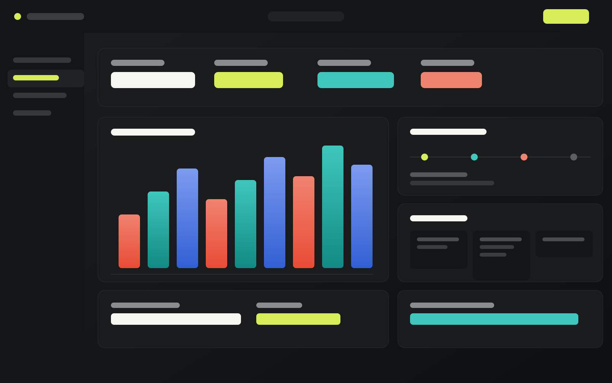
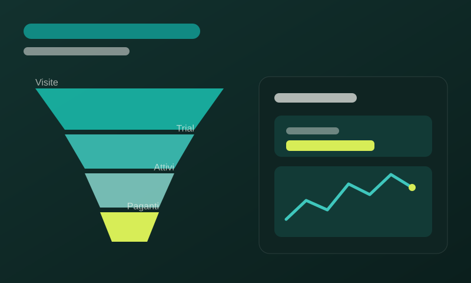
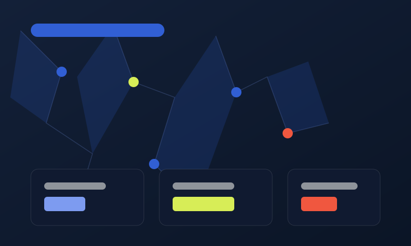
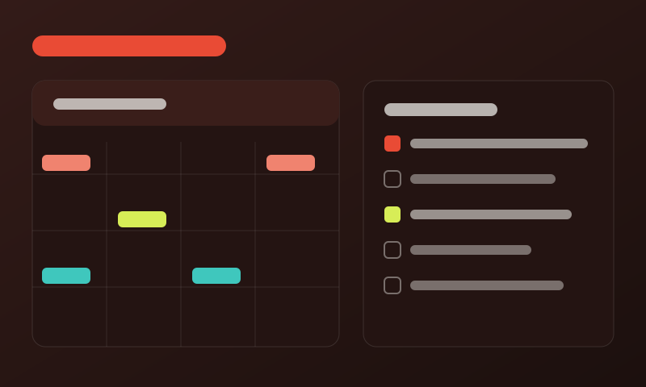

Strategia visibile
Roadmap, priorità e impatto commerciale entrano nella stessa pagina, senza perdere ritmo visivo.

Product operating system
Un portfolio prodotto per studi e founder che vogliono mostrare strategia, design e numeri nello stesso colpo d'occhio.
Sistema
Roadmap, priorità e impatto commerciale entrano nella stessa pagina, senza perdere ritmo visivo.
Layout editoriali, griglie strette e immagini prodotto fanno percepire il valore prima ancora della call.
CTA chiare, sezioni scannerizzabili e microcopy essenziale portano il visitatore verso una richiesta concreta.
Console
Kairo OS mette in fila insight, backlog, creative direction e numeri di go-to-market. Il risultato è una presentazione che sembra un prodotto, non una brochure.
Una vista pulita per capire dove intervenire senza aprire cinque tool.
Ogni progetto unisce immagine, risultato e decisioni chiave.
Metriche di traction, feedback e conversione restano leggibili.
Portfolio

Posizionamento, visual system e demo flow per un prodotto B2B.

Architettura di pagina, proof points e una narrativa più nitida.

Landing, moduli di contatto e sequenza contenuti per lead qualificati.
Metodo
Capire cosa deve vendere la pagina e cosa deve dimostrare il portfolio.
Tradurre valore, differenza e prova in una struttura rapida da leggere.
Costruire sezioni responsive con animazioni utili e visual prodotto.
Rifinire performance, copy e punti di conversione prima della pubblicazione.
Prossimo sprint
Brief in 20 minuti, prototipo in una settimana, pagina pronta a raccogliere conversazioni migliori.
hello@kairo.example